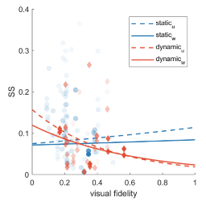

Tessa M. W. Talsma, M.Sc. Research Interests Human Computer Interaction Automotive Motion Perception Driving Simulator Virtual Reality Links University of Stuttgart website(opens in new tab) Google Scholar(opens in new tab) ORCID(opens in new tab)
Former Publications 2024 Towards a common understanding of Simulator Sickness Tessa M. W. Talsma, Ksander N. de Winkel, Riender Happee DSC (2024) PDF(opens in new tab) 2023 Validation of a moving base driving simulator for motion sickness research Tessa M. W. Talsma, Omar Hassanain, Riender Happee, Ksander N. de Winkel Applied Ergonomics (2023) DOI(opens in new tab) link(opens in new tab) PDF(opens in new tab) 2022  A meta-analysis of simulator sickness as a function of simulator fidelity Ksander N. de Winkel, Tessa M. W. Talsma, Riender Happee Exp Brain Res (2022) DOI(opens in new tab) PDF(opens in new tab)